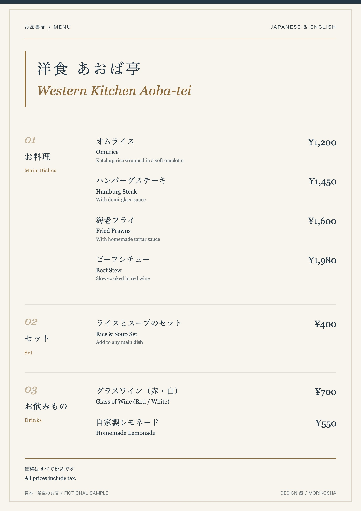
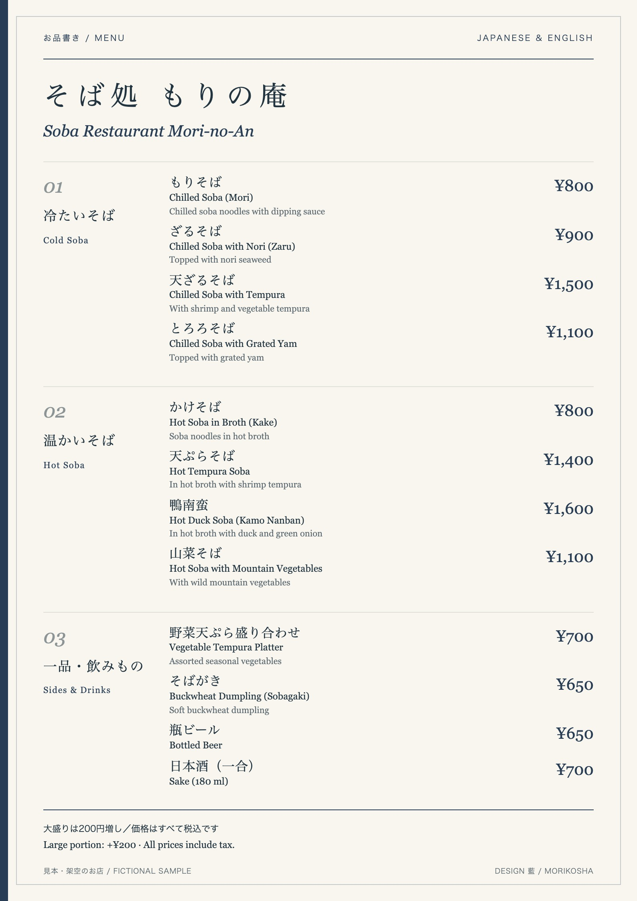
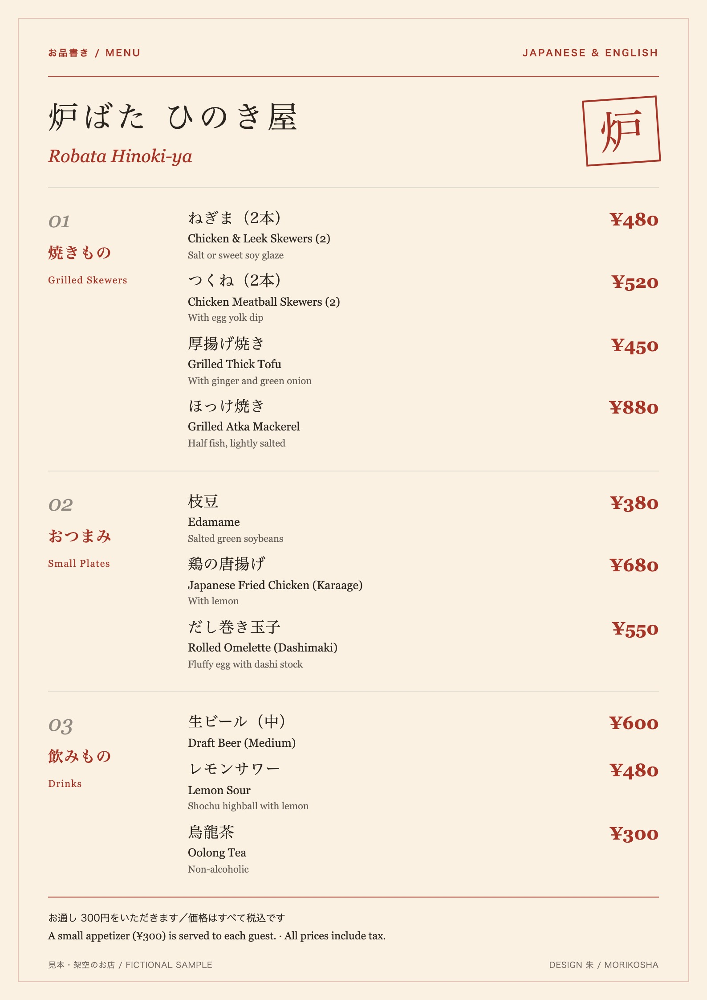
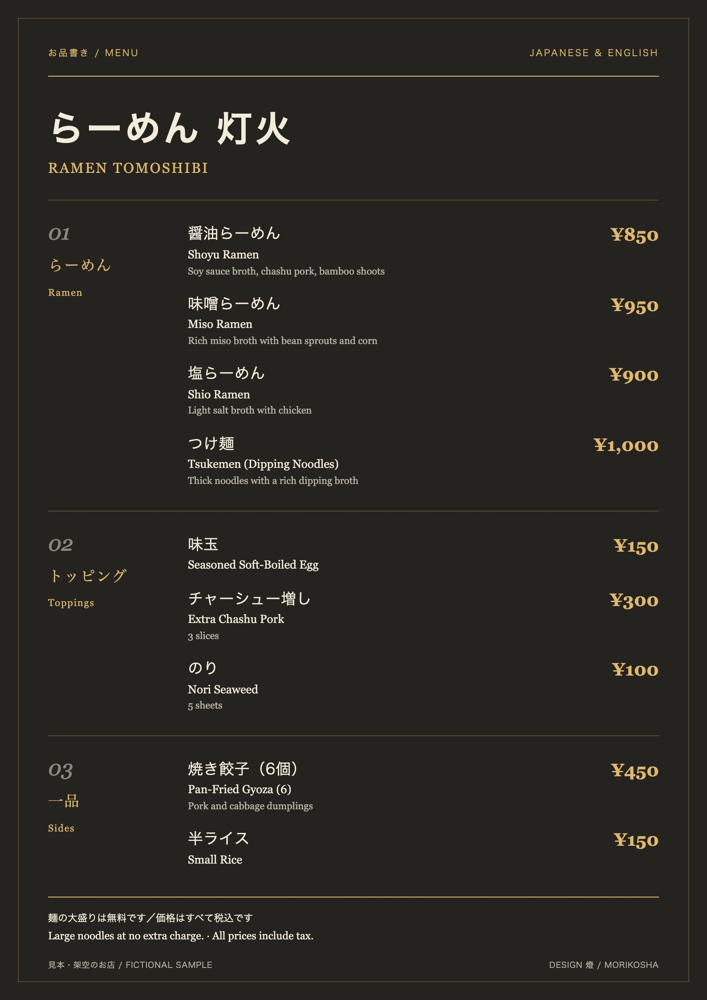
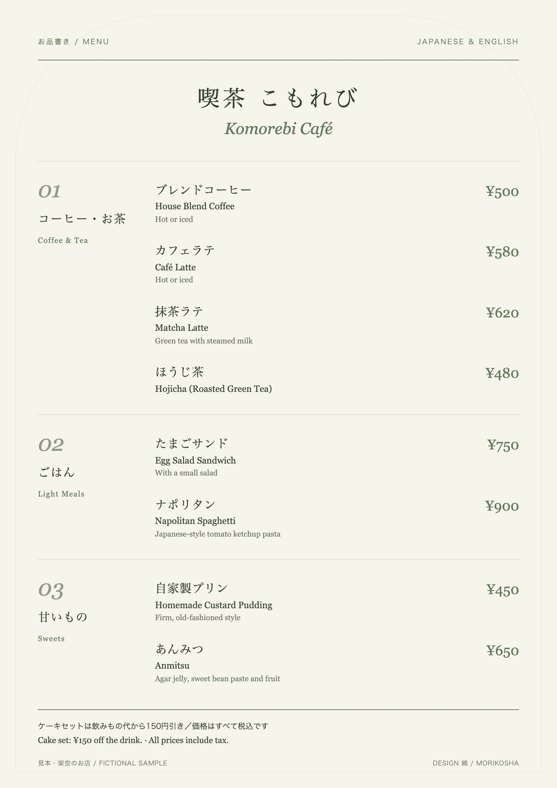

MORIKOSHA / MULTILINGUAL MENU
言葉が届けば、
楽しみが広がる。
日本語メニューの写真から、日本語と英語を並べたメニューへ。お店の雰囲気に合わせて整えます。

メニューの写真を1枚。
日本語と英語のメニューにして、お返しします。
お店・宿・体験教室のメニューを、日本語と英語の2か国語に。ほかの言語も足せます。お店のこだわりもうかがいながら、仕上げます。オンライン打ち合わせ・メール・お電話でのお打ち合わせや、定型フォームへのご記入など、ご希望に沿った形でご要望をうかがいます。
- 1 写真を送る撮ってメールに添えて送る
- 2 日本語／英語メニューが届くPDF と印刷用のデータで
- 3 確かめるお渡しのあと2週間
48,000円（税込）・2週間ほど（メニューの写真をいただいてから）
押すとメールが開きます。宛先 info@morikosha.com
写真は、メールの「＋（添付）」から選んで送れます。書くのは、お店の名前と写真だけで大丈夫です。


上の2枚は、架空のお店でつくった見本です。
デザインは5案から選べます
どの案も、日本語の下に英語を並べます。お店の雰囲気に合う1つをお選びください。
藍和食・そば

朱居酒屋

燈ラーメン・食堂

綿カフェ
銀洋食
ご依頼の流れ
写真を送る
日本語メニューの写真を、メールに添えて送ってください。
日本語／英語メニューが届く
メニューの写真をいただいてから、2週間ほどで PDF と印刷用のデータをお送りします。
確かめていただく
お渡ししたあと2週間のご確認の期間中は、1回に限り無償で直します。
お支払いの条件は、ご依頼が決まった際の契約書でお約束します。
翻訳の確かめ方
値段と品名は、人が1行ずつ確かめます。写真の文字と1行ずつ見比べ、値段も上から順に照らし合わせます。英語は、代表が全行を読んで仕上げます。
作業の中身をくわしく見る
- 写真の読み取りを、写真と見比べる機械で読み取った文字を、写真と1行ずつ見比べます。見本をつくったときは「もりそば」が「ありそば」と読み取られ、ここで直しました。
- 値段を、機械で突き合わせる写真の値段と、訳したメニューの値段を、上から順に1つずつ照らし合わせます。値段の取り違えは、ここで見つかります。
- 訳した文を、日本語に訳し戻す訳した文を、2種類以上の翻訳機で日本語に戻し、元のメニューと意味がずれていないかを見ます。ずれの大きい行には印が付き、そこを人が確かめます。
- 英語は、代表が読んで仕上げる英語は、代表が全行を読んで仕上げます。中国語・韓国語などは、3の訳し戻しを複数の翻訳機で重ねて確かめます。
料金
48,000円（税込）基本の料金だけで、日本語と英語のメニューが届きます。日本語と英語を並べたメニュー。品数にかかわらず同じ料金です。PDF と印刷用のデータでお渡しします。機械翻訳をもとに、人が確かめて仕上げます。
追加は、下の表のとおり（必要なときだけ）。
追加料金（必要なときだけ）
| 1言語追加中国語（繁体字）・中国語（簡体字）・韓国語など。1言語ごと（繁体字と簡体字は別の言語）。例：日本語／英語＋韓国語なら 66,000円（税込） | ＋18,000円（税込） |
|---|---|
| 印刷代行：パウチ（A4・両面・水に強い）10枚ごと・送料込み | ＋8,000円（税込） |
金額はすべて税込です。印刷代行は、印刷の前にお支払いをお願いします。
完成データの見本
銀・A4の完成見本。PDFをダウンロード ↗
よくある質問
手書きのメニューでも大丈夫ですか？
大丈夫です。読み取った文字は、写真と1行ずつ見比べて確かめます。読みにくい所は、メールでお尋ねします。
品数が多いときは？
品数にかかわらず、同じ料金です。
あとで値段が変わったら？
お渡しから2週間のうちは、1回まで無料で直します。それより後の直しは、1回ごとに18,000円（税込）です（ホームページ作成と同じ）。